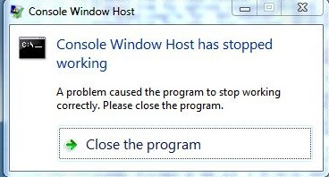
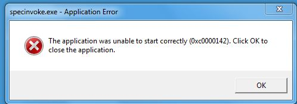
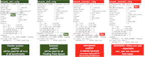

| $Id: faq.html 6307 2019-07-28 21:35:52Z JohnHenning $ | Latest: www.spec.org/cpu2017/Docs/ |
|---|
This document has frequently asked technical questions and answers about SPEC CPU®2017, a product of the SPEC® non-profit corporation (about SPEC).
Do you have a problem with SPEC CPU 2017?
Try these, in this order:
Contents
Installation
Install.01 ./install.sh: /bin/sh: bad interpreter: Permission denied
Install.02 The system manager won't let me use the mount command. What do I do?
Install.03 How do I uninstall?
Install.04 Why does installation fail on Redhat Enterprise Linux 8.0.0 and similar systems?
runcpu
runcpu.01 Why does runcpu exit instantly, with a pile of messages about compilation failed?
runcpu.02 Why does Windows reject my runcpu command, claiming it is not recognized, or the syntax is incorrect, or the path unexpected?
runcpu.03 Why am I getting errors about libnsl.so.1?
Building benchmarks
Build.01 zsh: command not found
Build.02 Why is it rebuilding the benchmarks?
Build.03 Is there a config file for Visual C++?
Build.04 Why does 510.parest fail with a message such as "error: ISO C++ forbids comparison between pointer and integer"?
Build.05 I'm using a gcc Example config. Why can't it find my copy of gcc? I set 'gcc_dir'.
Setting up
Setup.01 Target file doesn't match after copy
Setup.02 Copying executable failed
Running benchmarks
Run.01 What's this specrand thing?
Run.02 How long will the runcpu command take?
Run.03 Why was there this cryptic message from the operating system?
Run.04 Console Window Host has stopped working; specinvoke unable to start 0xc0000142
Run.05 Why did 621.wrf_s abort / hang / get a run time error? I'm using GCC 7.
Miscompares
Miscompare.01 I got a message about a miscompare
Miscompare.02 The benchmark took less than 1 second
Miscompare.03 The .mis file says "short"
Miscompare.04 My compiler is generating bad code!
Miscompare.05 The code is bad even with low optimization!
Miscompare.06 The .mis file is just a bunch of numbers.
Miscompare.07 Why is 627.cam4_s failing?
Miscompare.08 Why is 505.mcf_r miscomparing?
Results reporting
Results.01 It's hard to cut/paste into my spreadsheet
Results.02 What is a "flags file"? What does Unknown Flags mean?
Results.03 Submission Check -> FAILED
Power
Power.01 How do I measure power?
Power.02 What settings are required for the power analyzer?
Power.03 The runcpu command reported uncertainty errors, what can I do?
Power.04 Is it possible to retrieve all of the sample data collected from the power analyzer?
Temperature
Temperature.01 I got an error about it being too cold, what can I do?
a. If you are installing from the SPEC CPU 2017 ISO image, check to be sure that your operating system allows programs to be executed from it. For example, some Linux systems may need the exec property on the mount command -- as shown in Installing SPEC CPU 2017 on Unix Systems.
Or, perhaps install.sh lacks correct permissions because of problems as you copied directory trees from one place to another. Please don't do that - there's an easier way. See the next question.
a. As a fallback, you can install from a tarfile. See Installing SPEC CPU 2017 on Unix Systems Appendix 2.
a. You are correct that uninstall.sh does not remove the whole product; it only removes the SPEC CPU 2017 tool set, and does not affect the benchmarks (which consume the bulk of the disk space). At this time, SPEC does not provide an uninstall utility for the suite as a whole. But it's easy to do: on Unix systems, use rm -Rf on the directory where you installed the suite, for example:
rm -Rf /home/cs3000/saturos/spec/cpu2017
On Windows systems, select the top directory in Windows Explorer and delete it.
If you have been using the output_root feature, you will have to track those down separately. See the suggested commands in the appendix about uninstalling, in the install guides.
Note: instead of deleting the entire directory tree, some users find it useful to keep the config and result subdirectories, while deleting everything else.
The system prints several lines of complaints, including lines similar to these:
Error running runcpu tests. See /cpu2017/runcpu-test.linux-x86_64.out for details. Installation of linux-x86_64 aborted.
and the file runcpu-test.linux-x86_64.out contains
specperl: error while loading shared libraries: libnsl.so.1: cannot open shared object file: No such file or directory
a. Your system is missing a library that is no longer installed by default starting with Redhat Enterprise Linux 8. If you install the libnsl package, the correct library will be available and the SPEC CPU 2017 installation will succeed. For example:
yum install libnsl
(See also question runcpu.03 below.)
a. Your environment variables are not correctly set. Use one of the path-setting scripts to fix them.
Maybe you did something like the following? (Don't do this.)
cd /cpu2017 source shrc cd /cpu2006 source shrc runcpu
For SPEC CPU 2006, use the CPU 2006 path scripts and use the
runspec command.
For SPEC CPU 2017, use the CPU 2017 path scripts and the
runcpu command. (Why did the name change?).
The syntax of the command is incorrect runcpu is not recognized mumble\path was unexpected at this time
a. A variety of odd error messages on Microsoft Windows have been traced to paths in shrc.bat that use semicolons within quoted strings, such as:
set PATH="%PATH%;d:\My Compiler Path\bin" <--- wrong set PATH="%PATH%;d:\mycompiler\bin" <--- wrong
The correct way to do it is:
set PATH=%PATH%;"d:\My Compiler Path\bin"
or
set PATH=%PATH%;d:\mycompiler\bin
Notice that in both cases, there are no semicolons inside of quotes.
Why are all my runcpu commands failing with this message?
specperl: error while loading shared libraries: libnsl.so.1: cannot open shared object file: No such file or directory
a. Your system is missing the libnsl.so.1 library, which is needed by specperl. To fix the problem, install the library.
For example, on Red Hat Enterprise Linux release 8.0 (and similar) systems, notice that there are two software packages available:
libnsl Legacy support library for NIS libnsl2 Public client interface library for NIS(YP) and NIS+
By default, only the new version is installed, but you can easily add the older version.
# yum install libnsl
(See also question Install.04 above.)
During a build, it told me to look at make.out:
Compiling Binaries
Building 548.exchange2_r base none: (build_base_none.0000) [2017-05-08 09:16:57]
Error with make 'specmake --output-sync -j8 build':
----------------------------------------------------------------------------
Please review this file:
"C:\cpu2017\rc5\benchspec\CPU\548.exchange2_r\build\build_base_none.0000\make.out"
----------------------------------------------------------------------------
Command returned exit code 2
Error with make!
*** Error building 548.exchange2_r base
I looked, but it is pretty complicated. What does all this mean?
C:\cpu2017\rc5>type "C:\cpu2017\rc5\benchspec\CPU\548.exchange2_r\build\build_ba
se_none.0000\make.out"
C:/cpu2017/rc5/bin/specperl C:/cpu2017/rc5/bin/harness/specpp -DSPEC -DSPEC_CPU
-DNDEBUG -DSPEC_WINDOWS -DSPEC_CPU_WINDOWS -DSPEC_AUTO_SUPPRESS_OPENMP -DSPEC_P6
4 -I"C:/Program Files (x86)/IntelSWTools/compilers_and_libraries_2017/windows/co
mpiler/include/intel64" -I"C:/Program Files (x86)/IntelSWTools/compilers_and_lib
raries_2017/windows/compiler/include" -I"C:/Program Files (x86)/Windows Kits/10/
Include/10.0.14393.0"/ucrt -I"C:/Program Files (x86)/Windows Kits/10/Include/10.
0.14393.0"/um exchange2.F90 -o exchange2.fppized.f90
ifort -Qvc14 -Qm64 -c -Foexchange2.fppized.obj -QxHost -Qipo -O3 -Qprec-div- -Qo
pt-prefetch -I"C:/Program Files (x86)/IntelSWTools/compilers_and_libraries_2017/
windows/compiler/include/intel64" -I"C:/Program Files (x86)/IntelSWTools/compile
rs_and_libraries_2017/windows/compiler/include" -I"C:/Program Files (x86)/Window
s Kits/10/Include/10.0.14393.0"/ucrt -I"C:/Program Files (x86)/Windows Kits/10/I
nclude/10.0.14393.0"/um -nostandard-realloc-lhs exchange2.fppized.f90
zsh: command not found: ifort
specmake: *** [C:/cpu2017/rc5/benchspec/Makefile.defaults:386: exchange2.fppized
.obj] Error 1
C:\cpu2017\rc5>
a. Thank you for actually looking at make.out when runcpu suggested you
do so. That file contains the output from specmake, which
drives the build process, calling compilers, linkers, and other build tools. To understand the above
make.out, the key thing to notice is the line
zsh: command not found: ifort.
What this means is that your compiler is not on your %PATH%.
SPEC CPU 2017 benchmarks are supplied in source code form, and they must be compiled. But, the compiler could not be found, probably because:
To fix your problem, investigate and address both items.
You must use a config file that is appropriate for your compiler. Microsoft Visual Studio users: see below.
In shrc.bat, you need to call a compiler-vendor-supplied file that sets the path. It might be similar to one of these:
call "C:\Program Files (x86)\IntelSWTools\compilers_and_libraries_2017\windows\bin\compilervars.bat" intel64 vs2015 call "C:\Program Files (x86)\Microsoft Visual Studio 14.0\VC\vcvarsall.bat" amd64 call "c:\Program Files\PGI\win64\16.5\pgi_env.bat"
If you want to use this option but you can't find the right file, check your compiler documentation, or you might try searching your hard drive for *vars*bat. The file names change frequently; check your compiler docs. The call statement will vary by compiler, by version, and sometimes, by desired features. Check your compiler's documentation, to find the right call.
a. You changed something, and the tools thought that it might affect the generated binaries. More info
a. Yes, but:
See: %SPEC%\config\Example-VisualStudio.cfg. Please read the comments carefully inside the file.
a. Users of C++11 (and later) compilers may see messages such as the above. For GCC V7, the full message is:
In file included from include/base/parameter_handler.h:18:0,
from source/base/parameter_handler.cc:14:
source/base/parameter_handler.cc: In member function 'double dealii::ParameterHandler::get_double(const string&) const':
source/base/parameter_handler.cc:752:28: error: ISO C++ forbids comparison between pointer and integer [-fpermissive]
AssertThrow ((s.c_str()!='\0') || (*endptr == '\0'),
Solution: There are three solutions.
Note: neither solution 2 nor solution 3 would qualify for use as a portability flag. In a base compilation, it would need to be part of the set of flags that are applied consistently to a set of benchmarks.
a. It's probably better to use quotes. Instead of saying something like:
%define gcc_dir /compilers/misc-7.3.0-20180630
Try this instead:
%define gcc_dir "/compilers/misc-7.3.0-20180630"
The reason that the first one does unexpected things is because /x/misc is treated as the perl match operator (with 'm', 'i', 's', and 'c' as match modifiers). Presumably it returns a null string. Perl then tries to convert "7.3.0" into a number, getting 0. Lastly, it subtracted 20180630. Unfortunately, the gcc compiler is not installed in a directory named -20180630.
See the documentation of %define and the documentation of preprocessor expressions.
My system printed a strange, difficult to reproduce message:
Target file (mumble) doesn't match after copy ... in copy_file (1 try total)! Sleeping 2 seconds...
followed by several more tries and sleeps. Why?
a. During benchmark setup, certain files are checked. If they don't match what they are expected to, you might see this message. Check:
If the condition persists, try turning up the verbosity level. Look at the files with other tools; do they exist? Can you see differences? Try a different disk and controller. And, check for the specific instance of this message described in the next question.
My system printed a strange, difficult to reproduce message:
ERROR: Copying executable to run directory FAILED
or
ERROR: Copying executable from build dir to exe dir FAILED!
along with the bit about files not matching from the previous question. Why?
a. Perhaps you have attempted to build the same benchmark twice in two simultaneous jobs.
On most operating systems, the SPEC tools don't mind concurrent jobs. They use your operating system's locking facilities to write the correct outputs to the correct files, even if you fire off many runcpu commands at the same time. But there's one case of simultaneous building that is difficult for the tools to defend against: please don't try to build the very same executable from two different jobs at the same time. Notice that if you say something like this:
$ tail myconfig.cfg
500.perlbench_r:
basepeak=yes
$ runcpu --config myconfig --size test --tune base 500.perlbench_r &
$ runcpu --config myconfig --size test --tune peak 500.perlbench_r &
then you are trying to build the same benchmark twice in two different jobs, because of the presence of basepeak=yes. Please don't try to do that.
When I ran a suite of benchmarks, one of these was unexpectedly added. Why?
996.specrand_fs 997.specrand_fr 998.specrand_is 999.specrand_ir
a. Several of the benchmarks use a common random number generator. During development of CPU 2017, it was often useful to have the random number generator as a separate pseudo-benchmark, to help with problem diagnosis. ("You miscompared on benchmark mumble? Hmmm. Do you also miscompare on specrand?")
For the released version of the suite, SPEC decided to retain specrand, in case it comes in useful for later problem diagnosis. It is run with all four suites, but its time is not reported, and its performance does not contribute to the bottom line metrics. [More information]
a. About 5 minutes per benchmark; your time will vary.
q. What do you mean 5 minutes? It took me 5 hours!
a. That's because you ran a whole suite, in a reportable configuration (3 repetitions).
I was talking about just a single benchmark.
More info: [run times]
[suites and benchmarks]
[3 repetitions]
q. Can it take 103 hours? (Points at a pair of published results.)
a. Sure, if you want to do a big throuphput test like that one, running up to 256 copies of the 23 benchmarks in 2 suites, with both base and peak tuning. The referenced tests did 21,248 individual benchmark runs within two large throughput tests.
Two more example are discussed in the Overview.
a. If you are getting strange, hard-to-understand error messages from your system, one possible reason may be that the benchmarks consume substantial resources, of several types. If an OS runs out of some resource - for example, pagefile space, or process heap space - it might not give you a very clear message. Instead, you might see only a very brief message, or a dialog box with a hex error code in it. Try your system resource monitors, starting with whatever tool lets you watch memory usage.
[This item is from CPU 2006; it is included here in case similar problems occur with CPU 2017].
Windows users occasionally saw odd failures with this dialog box:

which, after pressing the button, was followed by:

The problem was difficult to diagnose, because the symptoms varied. Eventually, it was noticed that the problem system was using Windows 7 with an older (pre-Windows 7) version of cygwin in the %PATH%; removing cygwin from the %PATH% removed the failures.
Because the version of cygwin was obsolete, it would be unfair to "blame" it for the failures! Nevertheless, it may be fair to point out that providing a Unix-like environment on Windows poses difficult problems. Historically there have been various approaches, with differing assumptions about how to mask or bridge differences between Windows and Unix. The SPEC CPU 2017 toolset's approach might not match the approach used by your Windows/Unix compatibility product. Therefore, SPEC recommends that you should remove such items from the %PATH% prior to invoking runcpu, especially if you are encountering hard-to-understand errors.
More info: Windows PATH.
A gcc bugzilla report says I'm seeing many different kinds of failures when running a wrf_s binary compiled with gcc mainline. Double free aborts. Segfaults. Fortran runtime error: End of file. Etc..
Similar problems were seen by a SPEC CPU developer, along with hangs (runs that never ended).
a. The problem was fixed in GCC 7.3 by libgfortran patch request PR78387. Note that you need a libgfortran built from the 7.3 sources; it is not sufficient to merely upgrade gfortran.
Problem signature: If you see odd symptoms with wrf_s and can generate a stack trace (e.g. with gdb or gstack), check for mentions of stash_internal_unit. If it is present, then it is likely that you are missing the fix from PR78387. For example:
#9 0x00007f7651ca586f in _gfortrani_stash_internal_unit () from /lib64/libgfortran.so.4
The above was seen Jun-2018 on a system using CentOS Linux release 7.5 with /opt/rh/devtoolset-7/root/usr/bin/gfortran; however, as of that time, the libgfortran was from GCC 7.2.
Workaround: Install a copy of libgfortran based on GCC 7.3 or later.
Running Benchmarks
Running 999.specrand_ir ref base oct09a default
Error with '/spec/cpu2017/bin/specinvoke -E -d /spec/cp
u2017/benchspec/CPU/999.specrand_ir/run/run_base_refrat
e_oct09a.0000 -c 1 -e compare.err -o compare.stdout -f
compare.cmd': check file '/spec/cpu2017/benchspec/CPU/9
99.specrand_ir/run/run_base_refrate_oct09a.0000/.err'
*** Miscompare of rand.234923.out, see /spec/cpu2017/be
nchspec/CPU2017/999.specrand_ir/run/run_base_refrate_oc
t09a.0000/rand.234923.out.mis
Error: 1x999.specrand_ir
Producing Reports
|
Why did it say that? What's the problem?
a. We don't know. Many things can cause a benchmark to miscompare, so we really can't tell you exactly what's wrong based only on the fact that a miscompare occurred. But don't panic. Please notice, if you read the message carefully, that there's a suggestion of a very specific file to look in. It may be a little hard to read if you have a narrow terminal window, as in the example above, but if you look carefully you'll see that it says:
*** Miscompare of rand.234923.out, see
/spec/cpu2017/benchspec/CPU/999.specrand_ir/run/run_base_refrate_oct09a.0000/rand.234923.out.mis
Now's the time to look inside that file. Simply doing so may provide a clue as to the nature of your problem. On Unix systems, change your current directory to the run directory using the path mentioned in the message; on Microsoft Windows systems, remember to turn the slashes backwards in your cd command. Then, have a look at the file that was mentioned, using your favorite text editor. If the file does not exist, then check to see whether you have run out of disk space.
a. If the benchmark took less than 1 second to execute, it didn't execute properly. There should be one or more .err files in the run directory which will contain some clues about why the benchmark failed to run. Common causes include libraries that were used for compilation but not available during the run, executables that crash with access violations or other exceptions, and permissions problems. See also the suggestions in the next question.
'rand.234923.out' short
What does "short" mean?
a. If a line like the above is the only line in the .mis file, it means that the benchmark failed to produce any output. In this case, the corresponding error file (look for files with .err extensions in the run directory) may have a clue, such as Segmentation Fault - core dumped
For problems like this, the first things to examine are the portability flags used to build the benchmark. Have a look at the sample config files in $SPEC/config or, on Windows, %SPEC%\config. If you built your own config file based on one of those, maybe you picked a starting point that was not really appropriate. Have a look at other Examples in that directory. Check at www.spec.org/cpu2017 to see if there have been any result submissions using the platform that you are trying to test. If so, compare your portability flags to the ones in the config files for those results.
If the portability flags are okay, your compiler may be generating bad code.
a. Try reducing the optimization that the compiler is doing. Instructions for doing this will vary from compiler to compiler, so it's best to ask your compiler vendor for advice if you can't figure out how to do it for yourself.
a. If you're using a beta compiler, try dropping down to the last released version, or get a newer copy of the beta. If you're using a version of GCC that shipped with your OS, you may want to try getting a more recent version and building it yourself.
a. In this case, the benchmark is probably running, but it's not generating answers that are within the tolerances set. See the suggestions for how to deal with compilers that generate bad code in the previous two questions. In particular, you might see if there is a way to encourage your compiler to be careful about optimization of floating point expressions.
When I run it, I see something like this:
Running 627.cam4_s refspeed (ref) base mumble threads:4 [2017-09-25 03:59:50] 627.cam4_s: copy 0 non-zero return code (exit code=139, signal=0)
Investigating the run directory shows that the output file h0.nc does not exist.
$ go cam4_s run /export/home/cpu2017/v1.0/benchspec/CPU/627.cam4_s/run $ cd run_base_refspeed_* $ ls -l h0.nc ls: cannot access h0.nc: No such file or directory
The text output file ends after 1830 lines.
$ cat cam4_s_base*txt | wc -l 1830
|
a. Likely cause: either the process stack or the OpenMP stack is too small. For the process stack, before using runcpu, try setting the process stack size to at least 120 MB. On Unix systems (including Linux, Mac OS X, and so forth), this command ulimit -s should return either unlimited or a number greater than or equal to 122880 If your process stack is large enough, then the likely cause is that the OpenMP stack was not set properly using preenv. The illustration shows two correct ways to set it and two incorrect ways. Note: the exact size will vary depending on your operating system and your compiler; see also the examples in your installed SPEC CPU 2017 tree, in the config directory. |
 |
When using GCC v6 or later with -flto, why does 505.mcf_r (or 605.mcf_s) get the wrong answer?
a. You probably need to add -fno-strict-aliasing to your flags. See the detailed discussion in the documentation for 505.mcf_r.
a. Please don't do that. Instead, have a look at --output_format=csv. For CPU 2017 results posted at www.spec.org/cpu2017/results, the .csv outputs are posted right next to the other result formats.
a. SPEC CPU 2017 provides benchmarks in source code form, which are compiled under control of SPEC's toolset. Compilation flags (such as -O5 or -unroll) are detected and reported by the tools with the help of flag description files. Therefore, to do a complete run, you need to (1) point to an existing flags file (easy) or (2) modify an existing flags file (slightly harder) or (3) write one from scratch (definitely harder).
Notice that you do not need to re-run your tests if the only problem was Unknown flags. You can just use runcpu --rawformat --flagsurl
At the end of my run, why did it print something like this?
format: Submission Check -> FAILED. Found the following errors:
- The "hw_memory" field is invalid.
It must contain leading digits, followed by a space,
and a standard unit abbreviation. Acceptable
abbreviations are KB, MB, GB, and TB.
The current value is "20480 Megabytes".
a. A complete, reportable result has various information filled in for readers. These fields are listed in the table of contents for config.html. If you wish to submit a result to SPEC for publication at www.spec.org/cpu2017, these fields not only have to be filled in; they also have to follow certain formats. Although you are not required to submit your result to SPEC, for convenience the tools try to tell you as much as they can about how the result should be improved if you were to submit it. In the above example, the tools would stop complaining if the field hw_memory said something like "20 GB" instead of "20480 Megabytes".
Notice that you can repair minor formatting problems such as these without doing a re-run of your tests. You are allowed to edit the rawfile, as described in utility.html.
a. You can optionally measure power consumption by following the config file documentation on Power Measurement. Notice that you will need additional hardware, including an accepted power analyzer, temperature meter, and controller system.
a. To set up your power analyzer and to run the SPEC PTDaemon please consult the Power and Temperature Measurement Setup Guide. A copy is also in the PTDaemon tree of your installed copy of SPEC CPU 2017.
a. There could be many reasons. Are the values within the measurement capabilities that have been set for your power analyzer? Maybe you need to set the current ranges individually by benchmark.
Is PTDaemon reporting any errors? Try restarting it with the logfile and debug options:
ptd -l logfile -d debugfile ...
a. Power data is sampled at 1 second intervals. This data is stored in the raw file (.rsf) that is created after a run finishes, and can be extracted using extract_misc. As an example, to extract the power data from the period when the system is idle, you could run:
specperl $SPEC/bin/scripts.misc/extract_misc spec.cpu2017.idle_powersamples <raw file>
The output will go to the screen.
The general format of the command is
Usage: /spec/cpu2017/bin/scripts.misc/extract_misc <section> <file>
Where the section will look something like
spec.cpu2017.results.<benchmark>.<base|peak>.<iter>.powersamples
where <benchmark> is the full benchmark name, <iter> is the iteration number (3 digits).
ERROR: Minimum temperature during the run (19.5 degC) is less than the minimum
allowed (20 degC)
a. If you use the optional power metrics, the minimum inflow temperature must be 20 degC or higher. This value was chosen to prevent an artificially good result by running in unusually cold conditions. You will need to find a warmer spot to do your runs.
SPEC CPU®2017 Frequently Asked Questions: Copyright © 2017-2019 Standard Performance Evaluation Corporation (SPEC®)
{kind=link}